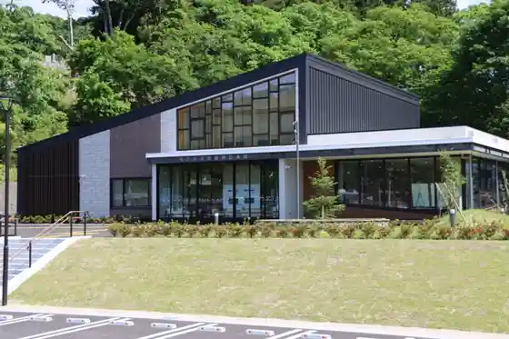
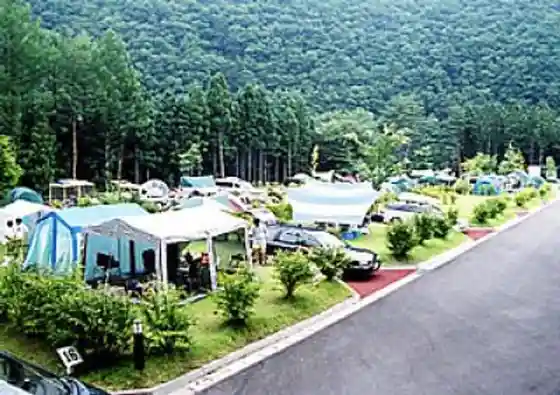
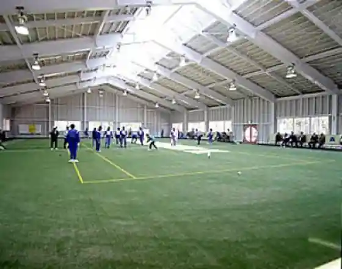
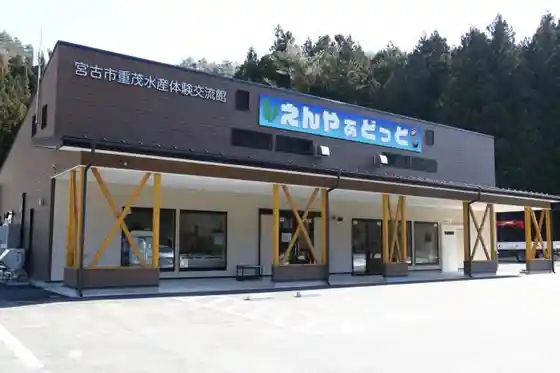

Miyakoshi Saigai Shiryo Densho Kan
Miyakoshi, Iwate · 0193-65-6852 · Official / source link

Hei Kawa Oto Campground
Miyakoshi, Iwate · 0193-72-3811 · Official / source link

Okunai Tamokuteki Undojo
Miyakoshi, Iwate · 0193-72-3800 · Official / source link

Miyakoshi Omoi Suisan Taiken Koryu Kan
Miyakoshi, Iwate · 0193-68-2301 · Official / source link

Masaki Kaigan Kominato Beach
Miyakoshi, Iwate · 0193-62-2111 · Official / source link
Miyakoshi Yagaikatsudo Center Campground
Miyakoshi, Iwate · 0193-64-8054 · Official / source link
Fuji no Kawa Beach
Miyakoshi, Iwate · 0193-62-2111 · Official / source link
Onna Yu Ko Beach
Miyakoshi, Iwate · 0193-62-2111 · Official / source link
Ane Kichi Campground
Miyakoshi, Iwate · 0193-68-2316 · Official / source link
Ao no Cave Sappa Fune Yuran
Miyakoshi, Iwate · 0193-63-1327 · Official / source link
Miyakoshi Anegasaki Oto Campground
Miyakoshi, Iwate · 0193-62-9911 · Official / source link
Hana Hyuzu
Miyakoshi, Iwate · 0193-72-3282 · Official / source link
Naka no Hama Campground
Miyakoshi, Iwate · 0193-62-9911 · Official / source link
Taimagura Campground
Miyakoshi, Iwate · 0193-78-2031 · Official / source link
Hebi no Me Main Shop
Miyakoshi, Iwate · 0193-62-1383 · Official / source link
Miyakoshi Kantorii Club
Miyakoshi, Iwate · 0193-62-7001 · Official / source link
Kawai Burakkubiinzu
Miyakoshi, Iwate · 0193-65-7735 · Official / source link
Kabocha Ramen
Miyakoshi, Iwate · 0193-72-3282 · Official / source link
Kusurishi Kawa Keiryu
Miyakoshi, Iwate · 0193-76-2165 · Official / source link
Shiisaidohausu Umisachi Sono
Miyakoshi, Iwate · 0193-67-3322 · Official / source link
Ku Kai Kogen Uokingu Center
Miyakoshi, Iwate · 0193-77-2216 · Official / source link
Tsukemono Gakkura no Sato
Miyakoshi, Iwate · 0193-65-7735 · Official / source link
Kawai Periira
Miyakoshi, Iwate · 0193-65-7735 · Official / source link
Hangan Inari Shrine
Miyakoshi, Iwate · 0193-62-2111 · Official / source link
Ikasembei Sugata
Miyakoshi, Iwate · 0193-71-2205 · Official / source link
Yaki Matsumo
Miyakoshi, Iwate · 0193-62-3304 · Official / source link
Ringo
Miyakoshi, Iwate · 0193-72-3282 · Official / source link
Kame Don
Miyakoshi, Iwate · 0193-62-3534 · Official / source link
Roadside Station Minato Oashisu Miyako Shiitopia Nado
Miyakoshi, Iwate · 0193-71-3100 · Official / source link
Taimagurabangaro Village
Miyakoshi, Iwate · 0193-78-2769 · Official / source link
Sanriku Shio Saida
Miyakoshi, Iwate · 0193-65-7181 · Official / source link
Senryo Otokoyama Hishi Ya Shuzo Mise
Miyakoshi, Iwate · 0193-62-3128 · Official / source link
Jodogahama Bijita Center
Miyakoshi, Iwate · 0193-65-1690 · Official / source link
Sanriku Tetsudo
Miyakoshi, Iwate · 0193-62-8900 · Official / source link
Otoge Dam (Kokudo 106 Gosen Soi)
Miyakoshi, Iwate · 0193-76-2111 · Official / source link
Kamegamori no Ippon Sakura
Miyakoshi, Iwate · 0193-62-2111 · Official / source link
Asari Hi
Miyakoshi, Iwate · 0193-87-2973 · Official / source link
Roadside Station (Taro)
Miyakoshi, Iwate · 0193-87-2971 · Official / source link
Roadside Station (Yamabiko Kan)
Miyakoshi, Iwate · 0193-85-5011 · Official / source link
Kariya Kawa
Miyakoshi, Iwate · 0193-72-2112 · Official / source link
Miyakoshi Kitakami Sanchi Folk Museum
Miyakoshi, Iwate · 0193-76-2167 · Official / source link
Yadorigi Tenjishitsu (Yamaguchi Kominkan Nai)
Miyakoshi, Iwate · 0193-62-3670 · Official / source link
Hei Kawa Keiryu
Miyakoshi, Iwate · 0193-76-2165 · Official / source link
Gongen Falls
Miyakoshi, Iwate · 0193-76-2165 · Official / source link
Kawai Ki no Museum
Miyakoshi, Iwate · 0193-76-2165 · Official / source link
Gassan
Miyakoshi, Iwate · 0193-62-3534 · Official / source link
Jodogahama Resutohausu
Miyakoshi, Iwate · 0193-62-1179 · Official / source link
Nami Da Saki
Miyakoshi, Iwate · 0193-62-2111 · Official / source link
Shiofuki Ana
Miyakoshi, Iwate · 0193-68-9091 · Official / source link
Kegon In
Miyakoshi, Iwate · 0193-69-2805 · Official / source link
Kuromori Shrine
Miyakoshi, Iwate · 0193-62-2111 · Official / source link
Tsugaru Ishikawa
Miyakoshi, Iwate · 0193-62-2111 · Official / source link
Nagasawa Kawa Sakura Zutsumi
Miyakoshi, Iwate · 0193-62-2111 · Official / source link
Kyusho Tera
Miyakoshi, Iwate · 0193-62-2111 · Official / source link
Omoi Peninsula Saki
Miyakoshi, Iwate · 0193-62-2111 · Official / source link
Jodogahama
Miyakoshi, Iwate · 0193-62-2111 · Official / source link
Tako no Hama
Miyakoshi, Iwate · 0193-62-2111 · Official / source link
Kan Go Kinrin Park
Miyakoshi, Iwate · 0193-62-2111 · Official / source link
Miyakoshi Gyosai Market
Miyakoshi, Iwate · 0193-62-1521 · Official / source link
Miyakoshi Yuransen (Miyakoshi Umineko Maru)
Miyakoshi, Iwate · 0193-65-8856 · Official / source link
Miyakoshi Minato Kaisen Kinenhi
Miyakoshi, Iwate · 0193-62-2111 · Official / source link
Yokoyama Hachiman Shrine
Miyakoshi, Iwate · 0193-62-2111 · Official / source link
Hon Sho Tera
Miyakoshi, Iwate · 0193-62-2111 · Official / source link
Miyazawakenji Kahi (Jodogahama)
Miyakoshi, Iwate · 0193-62-3534 · Official / source link
Rosoku Iwa
Miyakoshi, Iwate · 0193-62-3534 · Official / source link
Hinode Shima
Miyakoshi, Iwate · 0193-62-2111 · Official / source link
Kabuto Myojin Gaku
Miyakoshi, Iwate · 0193-62-2111 · Official / source link
Matsuzuki Coast
Miyakoshi, Iwate · 0193-68-9091 · Official / source link
Saito Yukiko Memorial Museum
Miyakoshi, Iwate · 0193-78-2705 · Official / source link
Kusurishi Toshitsu Kogei Kan
Miyakoshi, Iwate · 0193-75-2351 · Official / source link
Iwate Prefectural Suisan Science Museum
Miyakoshi, Iwate · 0193-63-5353 · Official / source link
Juni Kami Shizenkansatsu Kyoiku Hayashi
Miyakoshi, Iwate · 0193-62-2111 · Official / source link
Usuki Yama
Miyakoshi, Iwate · 0193-62-2111 · Official / source link
Kuromori Kagura
Miyakoshi, Iwate · 0193-65-7526 · Official / source link
Hei Kawa
Miyakoshi, Iwate · 0193-72-2112 · Official / source link
Tottori Shunyo Seika
Miyakoshi, Iwate · 0193-72-2019 · Official / source link
Matsu Maegami Raku
Miyakoshi, Iwate · 0193-87-2459 · Official / source link
Niisato Shogaigakushu Center Genno Kan (Gen no Ukan)
Miyakoshi, Iwate · 0193-72-2019 · Official / source link
Hatake Kanoko Yo Yaku Hozon Kai
Miyakoshi, Iwate · 0193-87-5144 · Official / source link
San O Iwa (Ken Shitei Tennenkinembutsu)
Miyakoshi, Iwate · 0193-68-9091 · Official / source link
Settai Nanatsu Mono
Miyakoshi, Iwate · 0193-87-5443 · Official / source link
Settai Ekimae Chokubai Tokoro
Miyakoshi, Iwate · Official / source link
Taro Furusato Bussan Center
Miyakoshi, Iwate · 0193-87-2891 · Official / source link
Karakasa Matsu
Miyakoshi, Iwate · 0193-87-5111 · Official / source link
Roadside Station (Ku Kai Highlands)
Miyakoshi, Iwate · 0193-77-2266 · Official / source link
Ku Kai Highlands
Miyakoshi, Iwate · 0193-76-2165 · Official / source link
Hayachine Yama
Miyakoshi, Iwate · 0198-48-2111 · Official / source link
Tochinai Hama
Miyakoshi, Iwate · 0193-87-2050 · Official / source link
Saga Bu
Miyakoshi, Iwate · 0193-68-9091 · Official / source link